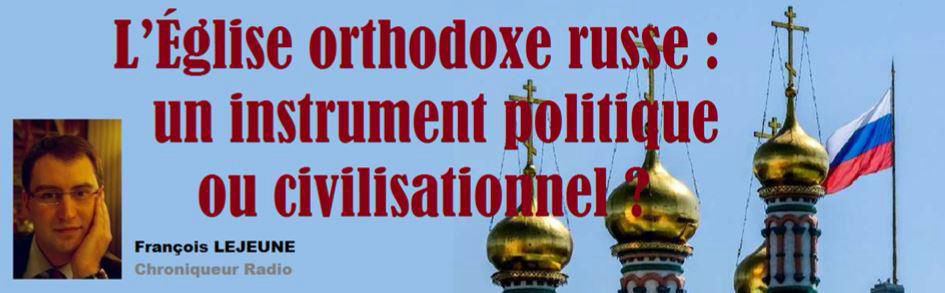
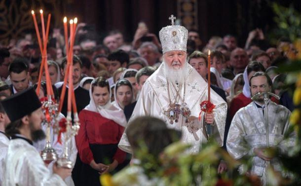
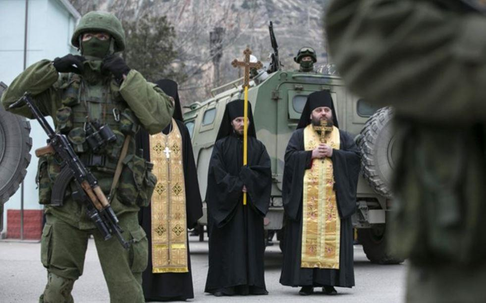
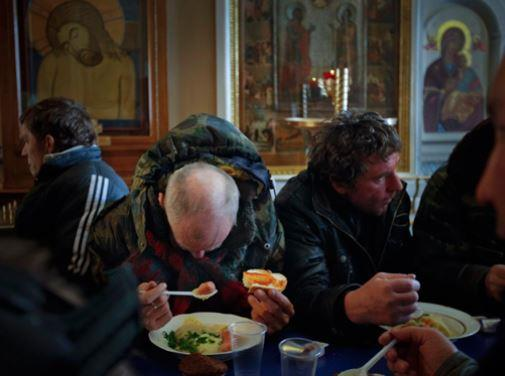
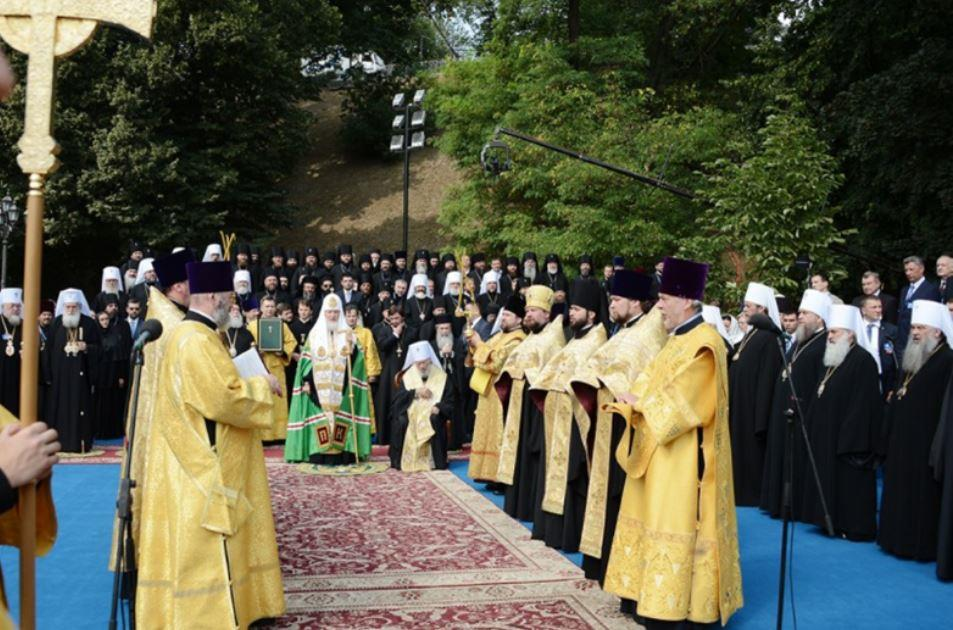

L’Église orthodoxe russe : un instrument politique ou civilisationnel ?
par François LEJEUNE

L’Église orthodoxe est indissociable de l’identité culturelle russe et nombre de ses symboles possèdent une connotation religieuse. Les armoiries représentent Saint Georges tuant le dragon et nombre de décorations portent les noms de saints russes.
Depuis la chute du communisme l’Église orthodoxe russe est en pleine croissance. Des dizaines de milliers de lieux de culte ont été rendus à leur vocation initiale. D’autres sont construits et des jeunes novices grossissent les rangs des séminaires.
Ainsi à Moscou, le nombre d’églises où sont célébrées la liturgie a été multipliée par vingt en trente ans. Les ordinations suivent le rythme de ces réouvertures de lieux de culte. De nombreux monastères reprennent vie. Les membres du clergé bénissent les bateaux et les sous-marins de l’armée. Les évêques, métropolites et le patriarche de l’Église orthodoxe russe prennent place dans toutes les manifestations publiques. Chose incroyable en France les institutions ecclésiastiques qui le désirent peuvent demander la rétrocession de leurs biens nationalisés en 1917. C’est un peu comme si le gouvernement français proposait de rétrocéder à l’Église ce qu’il lui a volé lors de la Révolution française et en 1905.
Les biens-pensants décrivent « une Église aux ordres » du Kremlin, vision contredite par la réalité.
Néanmoins, la place de cette Église très proche de l’État nous amène à nous poser la question suivante : Est-elle un instrument politique ou civilisationnel ? Le Grand ours serait-il à l’ombre de la croix ?
La renaissance de l’Orthodoxie russe à la fin de l’URSS, fut à n’en pas douter un des événements spirituels majeurs de ces 30 dernières années.
La Russie est redevenue une « puissance chrétienne » et son Église une puissance religieuse de premier rang internationale. Si la politique étrangère de l’État russe est dictée par une aspiration à la puissance, Moscou introduit au cœur de son projet une dimension morale et culturelle étroitement liée à la construction identitaire de la Russie, à la fois puissance orthodoxe1 et pays multinational et multireligieux.
Néanmoins comme l’indique les armoiries officielles, la religion orthodoxe est clairement favorisée. En septembre 2013, lors de sa rencontre à Valdaï avec des experts du monde entier, le président russe a exposé les raisons pour lesquelles la construction identitaire de la Russie et son ancrage dans la tradition étaient indispensables à son projet étatique. Le pouvoir politique soutient donc la renaissance de l’Église orthodoxe en échange de la stabilité qu’elle apporte.
Les oligarques de leurs cotés achètent à coup de donation mirifiques à l’Église une « conduite » et un patriotisme.
Le dynamisme et la jeunesse (relative) de son clergé sont accompagnés de restauration et de construction d’édifice religieux en ex URSS et au-delà. En tant que Français, nous avons pu voir à Paris la création de la Cathédrale russe de la Trinité au quai Branly et la restauration à Nice de l’Église Russe saint Nicolas.
Sur le territoire canonique de l’Église orthodoxe russe (ex URSS sauf l’Arménie et la Géorgie), l’Église orthodoxe russe semble jalousement garder ses nouvelles prérogatives auprès de la population russophone. Le pouvoir du Kremlin s’appuie largement sur les frontières de la Sainte Russie dessinées par l’Église orthodoxe russe pour souligner sa proximité avec des États désormais indépendants.
Récemment l’église orthodoxe russe par à la conquête de l’Asie du sud Est. Des paroisses ont été créées au Vietnam et aux Philippines notamment.
Il faut notez les résultats encourageants :
- Le volet social de l’Église orthodoxe a permis de créer des liens au sein de la population en termes d’entraide et d’enseignement. Le ralentissement du déclin démographique et de l’alcoolisme est en grande partie l’œuvre de l’Église orthodoxe.
- La population slave est revenue peu à peu à la religion orthodoxe avec les baptêmes et les mariages à l’Église.
- En Russie, on note plus de 3 millions de conversions à l’orthodoxie venant principalement de l’Islam. Même si en Asie centrale, la population orthodoxe se rétracte du fait de l’immigration, les conversions continuent lentement sur la population de culture musulmane.
Mêmes les opposants à cette Église reconnaissent ses avancées :
« Trois décennies à peine après la fin de l'URSS, l'Église russe cristallise toutes les contradictions de la Russie, mais son relatif conservatisme, sur un fond général de troubles, fait d'elle un facteur objectif de stabilisation et donc, indirectement, de démocratisation. » Concède Jean Christophe Colissimo ancien président de l’institut orthodoxe St Serge à Paris.
Au sein du pouvoir russe, les convertis montrent clairement leur nouvelle religion comme la député Alina Kabaeva ou le général Rashid Nurgalyev. (Ils viennent de l’islam)
Des sportifs comme Alia Mustaphina ou Elena Isinbayeva convertis (de l’islam) font de mêmes.
Au-delà de cette alliance structurante inscrite au cœur des relations entre l’Église et l’État russes, au-delà d’une même culture soviétique partagée par une grande partie des élites politiques, économiques et religieuses se reflétant, entre autres, dans les déclarations du Concile mondial populaire panrusse, les autorités ecclésiastiques et politiques s’appuient mutuellement les unes sur les autres pour défendre un même projet civilisationnel dans le monde globalisé, et partagent largement les mêmes intérêts dans l’espace postsoviétique.
C’est avec la religion orthodoxe russe et l’Islam ex soviétique que ce projet pourrait prendre forme. Celui-ci serait une alternative à celui proposé par les Etats-Unis et l’Arabie Saoudite
Après Maïdan, la Sainte Russie, telle qu’elle était rêvée par le patriarche Kirill, aurait perdu de sa consistance ; l’Ukraine n’apparaît plus comme la forteresse de la vraie foi. Dans une lettre adressée au patriarche œcuménique le 14 août 2014, le chef de l’Église orthodoxe russe affirmait que la guerre en Ukraine était aussi une guerre religieuse, « les représentants de l’Église gréco-catholique et les communautés schismatiques... prêchant la haine contre l’Église orthodoxe ».
En effet les Uniates gréco catholiques et les schismatiques ukrainiens appellent à la haine physique contre l’Église orthodoxe russe en Ukraine. N’Hésitant pas à s’allier avec des islamistes …
L’Église orthodoxe ukrainienne de Moscou accusée d’être vendue au kremlin fait face et resserre les rangs.
En Belarus, l’Église catholique locale est vue comme un élément contre le régime et anti russe. Le régime socialiste de Loukachenko se rapproche de l’Église orthodoxe malgré son athéisme.
Il n’en pas fallut beaucoup pour raviver le sentiment de méfiance russe contre l’Église catholique. Cette dernière est vue comme l’instrument de la colonisation polonaise du XVIème siècle mais aussi comme le catalyseur de la contestation anti soviétique en Pologne et en Lithuane.
Dans l’ex Union soviétique musulman, le clergé orthodoxe jouit d’un traitement de faveur contrairement aux autres Églises. 2
Au rythme des constructions d’Églises et du renforcement du clergé, on constate le renforcement de ce pilier civilisationnel et bien au-delà des jeux des présidents et des ministres.
On peut l’affirmer sans détour l’Ours russe est à l’ombre de la Croix mais celle-ci reste enracinée et parfois loin des jeux bassement politiques.
F.L.
NOTES
1 pravoslavnaia derjava, expression employée par Vladimir Poutine lors de sa visite au mont Athos en 2005.
2 Доклад Митрополита Ташкентского и Среднеазиатского на епархиальном собрании 26.05.2010 года.
Partager cette page